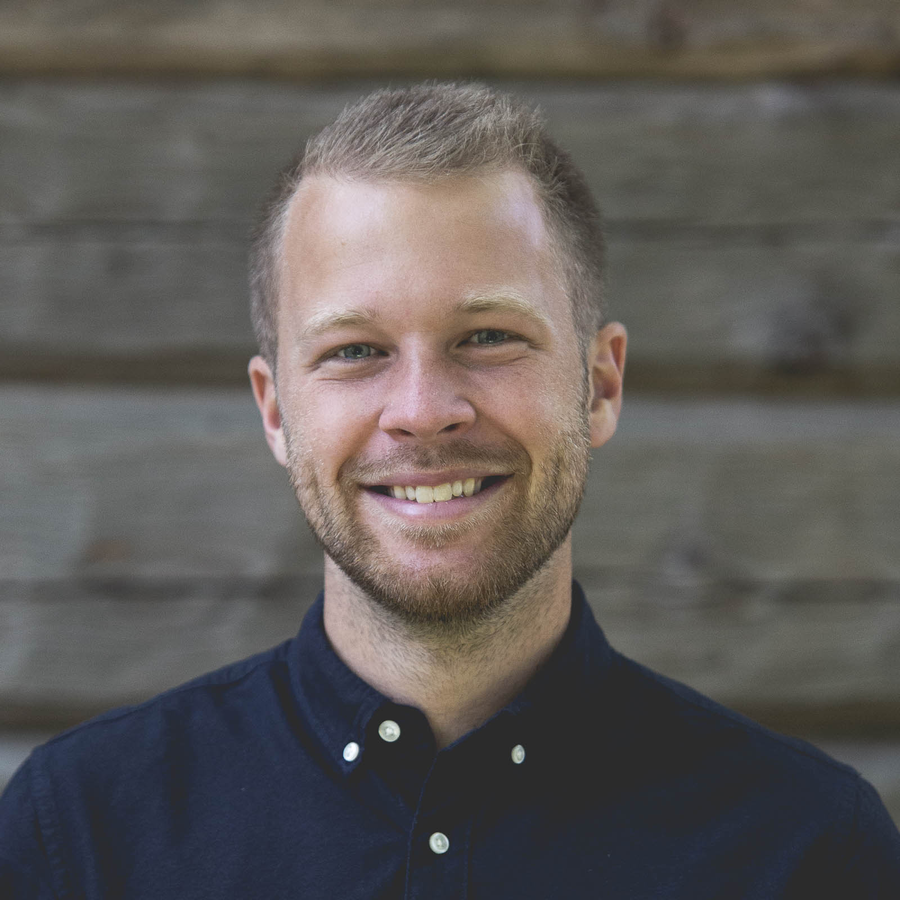

En webbtjänst för att boka tennisbanan på Högelids Tennisklubb. Ett ideellt arbete efter önskemål ifrån medlemmar med längre resväg. Hemsidan möjliggör att medlemmar kan se bokade tider och boka lediga tider.
Mitt ansvarsområde har varit att skissa på idéer, designat prototyper, kodat front-end och implementerat på webbserver.
Läs merEn portfolio för en musiker som vill demonstrera sina yrkeskunskaper. En webbplats där klienten kan demonstrera material både som musiker och som producent.
Ett helhetsprojekt med utveckling av webbplats samt serverhantering. Webbplatsen använder sig av ett ramverk ifrån Pure CSS för att skapa en responsiv sida som anpassar sig efter den enhet som används.
Läs merEtt skolarbete som gjordes tillsammans med två klasskamrater.
Vi fick i uppdrag att hjälpa Oscarsteatern att med stöd av IT skapa en mer komplett teaterupplevelse för teaterpubliken. Olika modeller över verksamheten togs fram och sedan presenterades ett förbättringsförslag som, med hjälp av IT, förhöjde upplevelsen för teaterbesökare.
Läs mer
Jag är en vetgirig person som tycker om att anta utmaningar och lära mig nya saker. Det senaste året har bestått till stor del av att lära mig webbutveckling. Därför såg jag skapandet av denna hemsida som ett bra tillfälle till att lära mig mera och utvidga mina kunskaper.
Som UX Designer anser jag att en stor del av arbetsprocessen att förstå användares behov och kartlägga vad som motiverar dem till att nå sina mål. Detta möjliggör att kunna designa bra lösningar med användaren och användarens mål i fokus.
Att involvera UX tidigt i en utvecklingsprocess kan spara mycket tid och pengar då det kan ge en bred förståelse för användargrupper och beteendemönster. Att inte göra rätt från början är en stor tidstjuv!
Ta en titt på mitt CV eller lägg till mig på Linkedin. Där finns mer information om utbildning och tidigare arbete.
Ladda ner CV